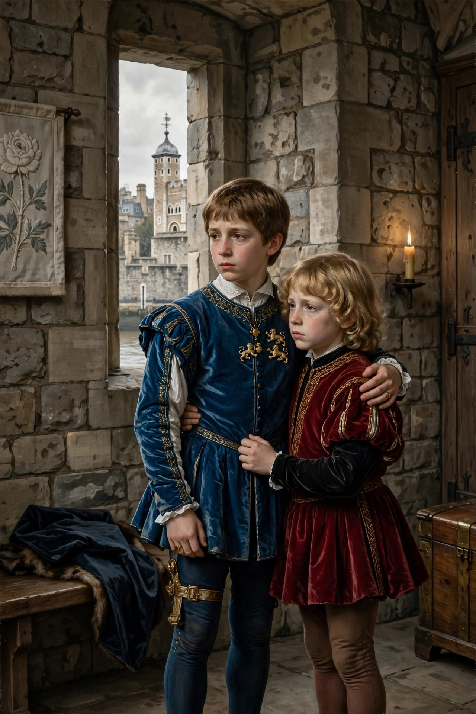

| Princes in the Tower | |
|---|---|
| Persons | Edward V (b. 1470); Richard, Duke of York (b. 1473) |
| Disappeared | Tower of London, summer 1483 |
| Father | Edward IV |
| Uncle / successor | Richard III |
| Status | Presumed murdered; fate unproven |
The Princes in the Tower were Edward V and his younger brother Richard of Shrewsbury, Duke of York, the sons of Edward IV and Elizabeth Woodville. After their father's sudden death in April 1483, the twelve-year-old Edward was proclaimed king, and both boys were lodged in the Tower of London — then a royal residence — ostensibly to await the coronation. By the autumn they had vanished. Their uncle, Richard, Duke of Gloucester, had himself crowned Richard III after Parliament declared the boys illegitimate in the act known as Titulus Regius. The princes were never seen again and are generally believed to have been murdered.

Through the summer of 1483 the boys were seen less and less; Dominic Mancini, an Italian visitor, reported their attendants withdrawn and the young king preparing for death "like a victim prepared for sacrifice". No contemporary document records their deaths, their burial or any funeral.
Suspicion has centred on Richard III, who had the clearest motive and custody of the boys; Tudor writers such as Thomas More accused him of ordering their smothering by Sir James Tyrrell. Revisionists have argued for other candidates, including Henry Stafford, Duke of Buckingham, and even Henry VII, and have questioned the Tudor sources. In 1674 workmen at the Tower found a wooden box containing two small skeletons, which Charles II had reburied in Westminster Abbey as the princes; their identity has never been scientifically established.
The mystery became a fixture of English culture — Shakespeare's Richard III fixed the image of the murderous uncle — and the pretenders Lambert Simnel and Perkin Warbeck later claimed, or were claimed, to be the younger prince. Modern petitions for DNA testing of the Westminster remains have so far been refused.
Edward IV · Richard III · Wars of the Roses · Tower of London